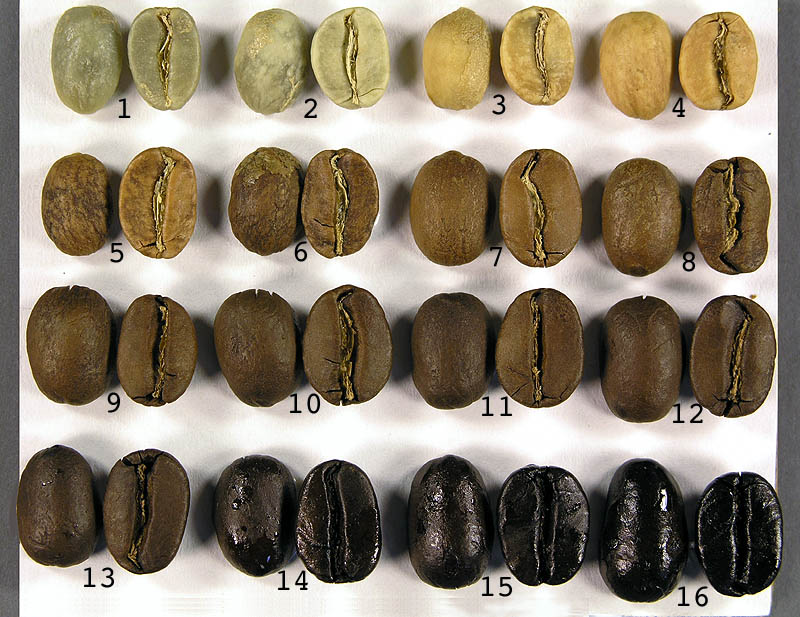
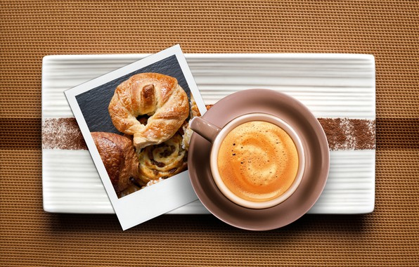
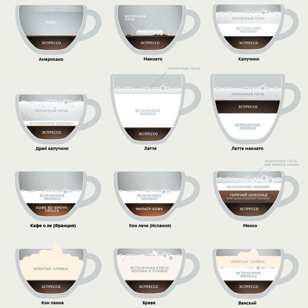
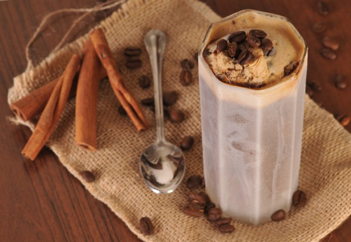
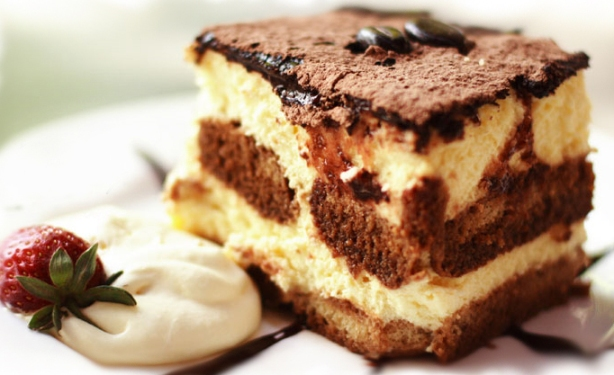
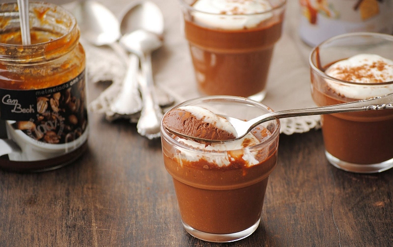
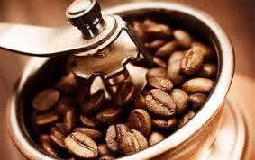

{kind=link}
{kind=link}
{kind=link}
{kind=link}
{kind=link}
О кофе
Сорта кофе часто путают с видами кофе. Видов кофе немного, основные из них это арабика и робуста. В свою очередь эти виды делятся на большое количество сортов (порядка нескольких тысяч), отличающихся между собой своими вкусовыми и ароматическими характеристиками.
По стране происхождения Критерии качества кофейных зерен в различных странах-производителях часто различаются. Поэтому и маркировка кофе от страны к стране может меняться. По странам производителям, наиболее популярные сорта зеленого кофе можно разделить на три основные группы: азиатские, африканские и американские.
Помимо классификации кофе по странам, существует и другие критерии деления сортов кофе: возраст, вкусовые качества, способ выращивания и др.
Organic coffees – экологически чистые сорта кофе, выращенные без применения химических и прочих средств для обработки деревьев. Подтверждать такую маркировку должны соответствующие сертификаты, и поскольку такие документы, да и сам способ производства весьма дорогостоящий, кофе таких сортов отличается высокой ценой.
Mild (англ. - мягкий, легкий) – в эту категорию включают лучшие сорта арабики, которые обладают мягким и абсолютно некрепким вкусом. Зерна с такой маркировкой считаются высокогорными, хотя для этого им необходимо произрастать на высоте не менее 500 метров над уровнем моря.
PB (англ. peaberry - горох). Почти все ягоды кофейных деревьев содержат в себе два зерна, но бывают случаи, когда они сростаются в одно. Такие зерна помечаются и продаются отдельно. Peaberry обычно составляют около 5% любого урожая кофе.
Обжарка кофейных зёрен и её степени
Обжарка — один из главных этапов в получении хорошего кофе. При обжарке зелёные кофейные зёрна увеличиваются в объёме почти на 50%, а их масса (преимущественно за счет потери влаги) становится примерно на 18% меньше. Вкус кофе формируется благодаря многим сложным ароматическим химическим соединениям. В зависимости от того, проявления каких соединений хочет добиться обжарщик, подбирается оптимальный режим обжарки.
Как правило, выделяют 4 степени обжарки. Самая лёгкая степень обжарки обычно называется скандинавской (5), более тёмная — венской (8), ещё темнее французская (12) обжарка. Самая тёмная степень обжарки называется итальянской (15-16).
 В европейской кофейной традиции, как правило, кофе тёмной обжарки используется для приготовления эспрессо, а лёгкая степень - чаще для заваривания во френч-прессе.Особенности выращивания кофе в домашних условиях
Кофейное дерево - изящное вечнозеленое растение, которому путем прищипывания и обрезки можно придать форму деревца либо кустарника. Листья крупные, супротивные, продолговатые, по краям волнистые. Если растение содержат в правильном режиме, то оно цветет весной и летом. Цветки изящные, очень душистые, белого цвета, около 2 см в диаметре, собраны в соцветия по несколько штук.
Несмотря на то, что существует около 50 видов растений только половина из них дает те знаменитые кофейные зерна, из которых приготовляют напиток, любимый во всех странах миpa.
Для выращивания дома наиболее распространен кофе сорта арабика (С. arabica L.), цветущий и плодоносящий на подоконнике. В оранжереях это дерево может вырасти довольно высоким, но в домашних условиях обычно не превышает 2 - 2,5 метров в высоту. Одно деревце даёт около 500 граммов зерён.
Так же, при выборе места для вашего кофе, следует обратить внимание на то, что кофе не любит сквозняков и лучше растет, когда его не переносят или поворачивают.
Приготовление
У кофе многовековая история, и пьют его почти во всех странах мира. В разные времена разные народы готовили кофе в соответствии со своими вкусовыми предпочтениями и техническими возможностями. Способы приготовления совершенствовались по мере развития культуры и технических возможностей. В мире существует десяток более или менее распространенных способов приготовления кофе и бесчисленное множество теоретически возможных и редких способов. Ниже приведены общие, относящимся в равной мере ко всем способам приготовления, рекомендации по приготовлению кофе:
Желательно что бы кофейные зерна были свежеобжаренными. Степень обжарки выбирается в зависимости от того, насколько вам по душе горьковатый привкус кофейного напитка. Длительное хранение обжаренных зерен сильно ухудшает как вкус, так и аромат кофе. Обжаривать кофейные зерна в домашних условиях трудно, поэтому лучше почаще покупать уже обжаренные зерна в специализированных магазинах.
Помол зерен очень важен для получения кофе высокого качества. Степень помола определяется способом, который вы выбрали для приготовления напитка. Если помол осуществляется дома, постарайтесь предварительно установить условия, соответствующие данному типу кофейника или кофеварки (количество кофе, засыпаемого в мельницу, продолжительность помола). Помните,что после помола кофе теряет аромат не по дням, а по часам. Не делайте больших запасов молотого кофе, не ленитесь лишний раз смолоть зерна или приобрести свежий кофе в магазине. Не забывайте и о том, что от степени помола зависит время заваривания.
Количество молотого кофе на одну чашку определяется соответствующей рецептурой. Лучше всего придерживаться установленных норм — не больше 1–2 чайных ложек молотого кофе на чашку воды. Если же сказать более точно, то специалисты по кофе рекомендуют 10г – 12г кофейного порошка на чашку воды (180см³). При недостаточном количестве кофе напиток не будет вкусным и ароматным. Чрезмерное же количество кофе даст слишком высокое содержание кофеина в напитке, что вредно для здоровья, да и не особенно вкусно. После того как вы выбрали способ приготовления, строго придерживайтесь заданной степени помола, постоянства соотношения количеств кофе и времени заваривания.
Вода не менее, чем сам кофе, важный компонент напитка. Для приготовления кофе нужна абсолютно чистая, свежая вода, не содержащая никаких запахов (гниль, хлорная известь и т.п.). Вода не должна быть мутной. Если вода чрезмерно хлорирована, ее необходимо выдержать несколько часов в открытом сосуде. Вода не должна быть ни слишком жесткой, ни слишком мягкой (в частности, вода от снега или льда). Если в воде содержится много солей, кофе будет невкусным. Жесткость воды выражают в миллиграмм - эквивалентах на литр (или в градусах). Жесткость до 4 мг-экв — мягкая вода, от 4 до 8 мг-экв — средней жесткости. Свыше 8 мг-экв вода является слишком жесткой для приготовления кофе (как, впрочем, и чая). Лучшая вода родниковая, вода из быстрых речек с каменисто-песчаным дном, проточная вода с ледниковых озер. Если вода чрезмерно жестка, целесообразно ее отстаивать перед употреблением.
Температура воды во время заваривания должна быть около точки кипения. Вода кипит при температуре 100°C. Кипение проходит три стадии. Первая — проскакивание со дна кофейника пузырьков и появление их на стенках. Вторая стадия — побеление воды, кипение «белым ключом» и, наконец, интенсивное бурление. Перекипевшая вода хуже для приготовления кофе или чая, надо пользоваться водой во второй стадии кипения. Кофе не варят, а заваривают. При первых признаках закипания сразу снимайте джузву с огня.
Сервировка стола также имеет не маловажное значение. Кофе наливают в маленькие, кофейные чашечки. Хуже, если это чайные чашки, и совсем плохо, если кофе подан в больших кружках или граненых стаканах. Разумеется, речь идет о крепком черном кофе. Кофе с молоком можно налить и в чайные чашки. Принято подавать к столу кофе именно в том сосуде, в котором он приготовлен. По чашкам кофе разливают тут же, за столом. Если кофе приготовлен по-восточному, то ни ложек, ни сахара к столу не подают. Во всех других случаях необходимы небольшие ложечки, соответствующие по размерам блюдцам и чашкам.
Горячие напитки
Стандартный кофе. Хорошо ополосните кофейник крутым кипятком и всыпьте в него половину приготовленной порции кофейного порошка. Залейте порошок кипятком и плотно закройте кофейник. Минуты через две всыпьте оставшийся порошок и долейте воду до необходимой пропорции. Подогревайте кофейник, на медленном огне, но не доводите кофе докипения. Минут через пять кофе готов. Соотношение между количеством воды и кофейного порошка обычное: 10 – 12г кофейного порошка на 180г воды, т.е. 1 – 2 чайные ложки порошка на стакан воды. Следует заметить, что в разных странах придерживаются несколько разных пропорций. Указанное соотношение характерно для западноевропейских стран, в латиноамериканских странах концентрация кофе более высокая, и совсем крепкий напиток предпочитают жители Востока.
Кофе по-восточному. Называют его и кофе по-турецки и кофе по-арабски, хотя, если быть точными, это несколько разные вещи. Кофейные зерна размалывают в очень тонкий порошок. Берут джезву нужного размера (на одну, две, четыре порции). Кладут туда сахар и наливают свежую воду. После того как вода закипит, добавляют кофейный порошок. Поднимается пена. Кофе дважды или трижды подогревают, не доводя до кипения. Пропорция такая: на 50 – 60г воды (маленькая кофейная чашечка) один кусочек быстрорастворимого сахара и полная чайная ложка кофейного порошка. Если очень сладкий кофе вам не по вкусу, сахара можно положить меньше или ограничиться щепоткой только для смягчения воды.
Кофе с молоком. Готовят тем способом, который вы предпочитаете, а затем добавляют в него молоко. Пропорция зависит от вкуса, чаще всего кофе и молоко смешивают в равных количествах. Итальянцы добавляют еще щепотку тонко размолотой корицы.
Мраморный кофе. Это не только вкусный, но и красивый кофе с молоком. Готовят его так: теплое молоко в небольшом количестве наливают только на дно кофейной чашки, a затем осторожно добавляют кофе. Перемешивать напиток не надо.
Кофе с лимоном. И в этом случае все очень просто. К чашке кофе подают ломтик лимона и сахар. В место лимона можно подать в тарелочке мелко накрошенную лимонную корку.
Итальянский кофе-капуцино.Вот еще один простой рецепт кофе с молоком. Вначале готовят обычным способом очень крепкий экспресс-кофе. Затем в кофеварку наливают такое же количество молока и прогоняют его через кофеварку так же, как и обычный кофе. Напиток разливают в чашки и слегка присыпают шоколадной пудрой. Не забудьте хорошо вымыть кофеварку (лучше сделать это не откладывая).
Кофе по-венски. Готовят очень крепкий черный кофе и разливают его в чашки. Затем на поверхность кофе кладут чайную ложку сливок, взбитых в миксере. При желании в сливки добавляют немного сахарной пудры и щепотку ванили. Чтобы у напитка был красивый вид, сливки посыпают сверху мелкими крошками шоколада.
Кофе «Нью-Орлеан». В джезве или небольшой кастрюльке смешивают 1/3 чашки очень крепкого кофе, 1/3 чашки молока и 1/3 чашки сливок. Смесь ставят на огонь и нагревают почти до кипения. Затем разливают в чашки и подают на стол.
Кофе с шоколадом. На дно кофейной чашки кладут дольку шоколада, а затем наливают горячий кофе. Слегка помешивают ложечкой до тех пор, пока шоколад не расплавится, Конечно, для такого напитка больше подходит кофе, сваренный в кофеварке. Если же кофе сварен по-восточному в джезве, то надо проследить, чтобы в чашку не попал осадок.
Бразильский кофе. Eще один рецепт кофе с шоколадом. Плиточный шоколад (125г) крошат на мелкие кусочки и растворяют в крепком горячем кофе (половина чашки). Три чашки горячего молока добавляют к смеси, не прерывно ее при этом взбивая. Кладут сахар по вкусу и разливают напиток в маленькие чашки, каждую из них украшают чайной ложкой взбитых сливок. Рецепт рассчитан на приготовление четырех порций.
Кофе с какао. В крепкий горячий кофе кладут сахар, а потом добавляют какао со сгущенным молоком. Сверху в каждую чашку добавляют не много сливок. Для приготовления, одной порции нужна чашка очень крепкого кофе, два кусочка сахара, столовая ложка какао со сгущенным молоком и столовая ложка сливок.
Кофе с чаем. Приготавливается крепкий кофе и крепкий настой чая. Напитки смешиваются в равных долях. Сахар подают отдельно и добавляют по вкусу.
Кофе с яйцом. Для приготовления четырех порций требуется 1 яйцо и 4 маленькие чашки крепкого горячего кофе. Желток отделяют от белка и растирают с двумя ложками сахарной пудры, а белок взбивают в миксере. В каждую чашку с кофе кладут на поверхность немного желтка, а когда он разойдется и покроет поверхность, в центр положить взбитый белок. Напиток получается очень мягкий и питательный.
Кофе по-явански. Один из вариантов кофе с какао. Смешивают чашку очень крепкого кофе с такой же чашкой какао, приготовленного обычным образом. В каждую чашку со смесью добавляют с верху немного сливок.
Кофе «Голливуд». Готовят очень крепкий кофе, отдельно кипятят молоко. Засыпают в кастрюлю какао и сахар, вливают туда часть молока и хорошо перемешивают, а затем добавляют оставшееся молоко и щепотку соли. Ставят на огонь и кипятят примерно 10 мин. Снимают с огня, энергично взбивают до получения маслянистой, пузырящейся массы, после этого добавляют кофе, продолжая взбивать. Еще горячий напиток разливают в чашки и украшают взбитыми сливками. Рекомендуется посыпать сливки жареным миндалем. Для приготовления 4 порций нужны две столовые ложки какао, две столовые ложки сахарной пудры, 2 чашки молока и две чашки очень крепкого кофе.
Французский крем-кофе. Доводят до кипения примерно 0,5л молока, предварительно перемешав его со 150г сахара. Закипевшее молоко снимают с огня и добавляют 4 столовые ложки сливок. Энергично взбивают, а затем доливают 0,25л крепкого горячего кофе. Перемешивают и разливают в маленькие чашки.
Кофе с шиповником. Вкусный витаминизированный кофейный напиток можно приготовить с использованием сухих ягод шиповника. Ягоды тщательно промывают в горячей воде, кладут в термос и заливают кипятком. Примерная пропорция: пол стакана ягод на 0,5л воды. В термосе настой выдерживают около 12ч. В дальнейшем этот настой и спользуется вместо воды для приготовления кофе обычным способом. При желании концентрация настоя может быть уменьшена добавлением кипяченой воды.
Хлодные напитки
Чашка горячего кофе хороша после обеда. А в жаркий солнечный день, когда мучает жажда, очень приятны холодные кофейные напитки. Для их приготовления, как правило, требуется минимальное время, особенно если в запасе есть кофейная эссенция или растворимый кофе.
Кофейный лед.Готовят очень крепкий кофе, добавляют сахар. Остывший кофе заливают в формочку, предназначенную для замораживания воды в морозильном отделении холодильника. После того как кофе замерзнет, его разламывают на кускии заливают холодной водой. Кофе с сахаром замерзает медленно, поэтому чаще замораживают без него.
Кофе с мороженым. Перемешивают половину чашки крепкого кофе и половину чашки охлажденного молока, добавляют столовую ложку сахара. Затем сверху кладут 2 чайные ложки мороженого. Другой вариант: 50г сливочного мороженого, 30г карамельного сиропа на стакан крепкого холодного кофе. Сверху кладут взбитые сливки.
Холодный кофе с молоком. Для приготовления 1 порции напитка нужны стакан очень холодного молока, 2 столовые ложки кофейного сиропа и 2 столовые ложки мороженого. Все это перемешивают, выливают в миксер и взбивают. Напиток разливают в стаканы, при желании добавляют лед. Кофейный сироп можно заменить растворимым или просто крепким холодным кофе.
Холодный кофе с вареньем. В половине стакана холодного крепкого кофе разводят чайную ложку смородинового варенья и столовую ложку сахара. Напиток процеживают, и наливают в стакан. Рецепт рассчитан на 1 порцию.
Холодный шоколадный кофе. Для 4 порций напитка берут 4 дольки шоколада, 0,5л крепкого холодного кофе, 100г сахара, 3 столовые ложки сливок и щепотку корицы. Шоколад растворяют в нескольких ложках теплой воды, добавляют кофе, сахар, сливки и корицу. Тщательно все перемешивают и ставят на некоторое время в холодильник. 
Кофе со льдом. Для приготовления 1 порции необходима чашка крепкого кофе, 4 куска сахара, чайная ложка взбитых сливоки 1/3 чашки толченого льда. В кофе кладут сахар, охлаждают, а затем вместе со льдом взбивают в шейкepe или миксере. Наливают в стакан и сверху кладут взбитые сливки.
Кофе, взбитый с мороженым. Для одной порции нужны половина стакана холодного крепкого кофе и примерно 2 столовые ложки мороженого (предпочтительнее ванильного). Перемешивают кофе с мороженым, взбивают в миксере и подают на стол. В чашки можно добавить по кусочку льда.
Холодный венский кофе. В стакан ледяной воды из холодильника добавляют 2 чайные ложки растворимого кофе и столовую ложку молока. Все перемешивают и взбивают в миксере. Разливают в стаканы, сверху кладут взбитые сливки (если вы спешите, их можно не взбивать). Напиток нужно подавать очень холодным, поэтому рекомендуется выдержать его некоторое время в холодильнике.
Быстрый кофе-гляссе. Рецепт привлекает быстротой приготовления. На 4 порции берут 4 столовые ложки сливок, 4 столовые ложки сгущенного молока, 1,5 чайной ложки растворимого кофе и стакан воды. Все это хорошо перемешивают, добавляют полстакана толченого льда, взбивают и разливают в стаканы. При желании добавляют лед.
Миндальный кофе. 1,5 чашки крепкого холодного кофе, 3 кусочка сахара, чайная ложка толченого миндаля и чайная ложка рома взбиваются в шейкере или в миксере. Напиток разливают в стаканы и добавляют кусочки льда.
Кофейный напиток с соками. 30г клубничного сиропа (50г персикового или апельсинового сока), 20г молока доливают в стакан с крепким не сладким кофе. К столу подают сильно охлажденным.
Кофейный напиток с медом.Отдельно приготавливают кофейный сироп и охлаждают его (20г размолотого кофе, 1 чайная ложка сахара, 0,5 стакана воды, лимонной кислоты повкусу). В охлажденный сироп добавляют мед, натуральное вино, минеральную воду. Пропорция: на стакан 20г меда, 30г натурального вина, 10г минеральной воды, миндальная эссенция по вкусу. Подают охлажденным, добавив ломтик лимона и кусочек льда.
Простой кофейный коктейль. Смешивают 1 яичный желток, 3 столовые ложки очень крепкого кофе, по 1 столовой ложке молока и сметаны. Взбивают эту смесь в миксере в течение примерно 30с. и сразу же подают на стол.
Кондитерские изделия из кофе
Кофейное суфле. 10 столовы хложек масла кладут в кастрюлю и растапливают. Добавляют 8 полных столовых ложек муки. Смесь продолжают нагревать, непрерывно помешивая деревянной ложкой. Через несколько минут кастрюлю снимают с огня, добавляют холодное молоко (0,5л) и щепотку соли. Все это перемешивают до тех пор, пока смесь не загустеет, после чего кастрюлю снова ставят на 1 – 2 мин. на огонь. Затем добавляют 1 столовую ложку кофейного экстракта (или растворимого кофе в нужной пропорции) и 6 столовых ложек сахарной пудры. Берут 5 яиц, отделяют желтки от белков. Желтки добавляют к смеси и хорошо взбивают. Отдельно взбивают белки, осторожно добавляют их к смеси. Маслом намазывают форму или несколько небольших форм, наполняют их до половины приготовленной смесью и ставят в горячую духовку. На стол суфле подают сразу же после приготовления.
Кофейный пудинг. Берут 100г сливочного масла и, растворив его на огне, добавляют 200г слегка поджаренной муки. Непрерывно помешивая, наливают 0,5л кипящего молока. Смесь доводят до кипения, а затем, слегка охладив, добавляют 20г молотого кофе, 150г сахара и 8 желтков. Отдельно взбивают 8 белков вместе с 50г сахара и ванилином и осторожно смешивают с первой массой. Приготовленным таким образом тестом заполняют на 3/4 форму для пудинга, предварительно смазав ее маслом. Форму ставят в кастрюлю с кипящей водой, и пудинг запекается. На стол его подают с подливкой, приготовленной по такому рецепту. Хорошо перемешивают 100г сахара, 2 яичных желтка, 30г муки, 100г холодного молока и немного ванилина. Перемешивают 0,5 стакана молока и столько же крепкого черного кофе, ставят на огонь и доводят до кипения. Непрерывно помешивая, добавляют первую массу. Доводят до кипения, снимают с огня и осторожно перемешивают с пеной двух предварительно взбитых яичных белков.
Кофейный торт. Взбивают 5 яичных белков; 0,5 стакана очень крепкого кофе варят с 280г сахара до получения густой массы. Пену белков перемешивают с горячим кофе, энергично при этом взбивая. Добавляют 5 желтков и 170г муки, хорошо перемешивают и заливают в форму для выпечки тортов, предварительно смазав ее маслом и посыпав мукой. Выпекают при средней температуре. Остывший торт разрезают по горизонтали на несколько слоев, начиняют английским кофейным кремом, рецепт которого приведен выше, и этим же кремом глазируют.
Холодный кофейный торт. Яичные желтки растереть с сахаром. Взбить в пену белки, а затем осторожно соединить их с желтками. Ванильные сухари растереть и смешать с яичной маcсой. Влить растопленное сливочное масло и хорошо перемешать. Влить холодный сладкий кофе и снова перемешать. Выложить в форму и поставить на холод. Пропорция: 200г сливочного масла, 2 яйца, 1 стакан сахара, 300г ванильных сухарей, 0,5 стакана черного кофе.
Кофейное мороженое.4 яичных желтка хорошо растирают с 250г сахара, добавляют 3 стакана крепкого кофе с молоком и ставят на огонь. Постоянно перемешивая, доводят до кипения. Снимают с огня и продолжают перемешивать до полного охлаждения. Смесь выливают в мороженицу и замораживают. Подавая мороженое настол, можно украсить его поверхность пеной из взбитых сливок.
Кофейная карамель. 8 столовых ложек сахарного песка и 5 столовых ложек масла кладут в кастрюлю и ставят на огонь. Подогревают в течение 10 мин., хорошо перемешивая. Затем добавляют стакан очень крепкого кофе и стакан сливок. Перемешивают и варят 10 мин. Тем временем намазывают растительным маслом какую-нибудь гладкую поверхность, на которой будет остывать смесь. Готовность ее легко проверить: если капля ее в стакане с холодной водой не растекается, смесь готова. Ее выливают из кастрюли на приготовленную поверхность и разрезают ножом на квадратики.
Масляный кофейный крем. В маленькой кастрюльке тщательно смешивают 1 яйцо и 100г сахара. Ставят кастрюлю на огонь только для того, чтобы растопился сахар (смесь при этом не должна свернуться). Взбивают 200г масла и понемногу добавляют его в охлажденную смесь, продолжая взбивать. Затем добавляют 2 столовые ложки кофейного экстракта. Вместо него можно взять очень крепкий кофе или смесь из 2 столовых ложек растворимого кофе и 2 столовых ложек воды. Такой крем используют для приготовления пирожных и тортов. Другой вариант: на слабом огне или над паром варят, все время помешивая, смесь из 3 яичных желтков, 150г сахарной пудры и 4 столовых ложек крепкого черного кофе. Когда смесь загустеет, ее снимают с огня, охлаждают и хорошо перемешивают. Добавляют 200г взбитого масла.
Английский кофейный крем. Смешивают 4 желтка и 150г сахара, взбивают несколько минут. Понемногу добавляют в смесь горячее молоко, продолжая взбивать. Ставят на очень слабый огонь, непрерывно помешивая. Как только смесь загустеет, снимают с огня. В достаточно загустевший крем добавляют столовую ложку растворимого кофе, тщательно перемешивают и охлаждают. Другой вариант: 125г сахарной пудры растирают с 4 желтками. В смесь вливают стакан крепкого кофе и стакан молока, после чего ее процеживают через густое сито. Затем подогревают на слабом огне и снова процеживают. Можно добавить 2 чайные ложки крахмала, разведенного сахаром. Крем используют для пирожных и тортов, а также для намазывания бисквитов.
Кондитерский кофейный крем. В кастрюле смешивают 60г муки, 125г сахарной пудры, 4 яичных желтка и заливают все это 0,5л кипящего молока, в котором предварительно растворены столовая ложка растворимого кофе и немного ванили. Все это тщательно перемешивают, ставят на огонь и доводят до кипения. Сняв с огня, добавляют 30г сливочного масла и охлаждают. Такой крем годится для начинки эклеров, сдобных булочек, для намазывания тартинок.
Кофейные сандвичи. Берут 100г плиточного шоколада, растворяют в трех столовых ложках теплой воды. Добавляют столовую ложку масла и чайную ложку растворимого кофе. Все это хорошо перемешивают. Приготовленный таким образом крем намазывают на один слой бисквита, а сверху накрывают другим слоем. Перед подачей на стол сандвичи охлаждают.
Кофейный мусс. Для приготовления 6 порций берут 200г холодных сливок, добавляют к ним 2 столовые ложки ледяного молока и взбивают. Отдельно взбивают 4 желтка, постепенно добавляя к ним 150г сахара. Добавив 2 чайные ложки кофейной эссенции (или чайную ложку растворимого кофе), осторожно перемешивают обе смеси. Перед подачей на стол мусс охлаждают в холодильнике.
Аппаратура
Для того что бы кофе получился хорошим его нужно молоть непосредственно перед приготовлением. Готовый молотый кофе, который продается в супермаркетах, обладает не таким цельным ароматом как свежемолотый, к тому же этот аромат выветриваться при каждом открытии банки. Рассмотрим основные критерии для выбора кофемолки.
Ротационные (ножевые) кофемолки
Принцип работы кофемолки ножевого типа достаточно прост: в той ёмкости, куда засыпаются зерна для помола, находятся ротационные ножи, которые при включении начинают быстро вращаться и просто рубят зерна. Степень помола в данном случае регулируется исключительно длительностью процедуры - чем дольше молем - тем мельче будет помол. Основными характеристиками для кофемолок данного типа являются вместимость контейнера и мощность мотора.
Вместимость контейнеров варьируется от 40г. до 120г. Учитывая то, что хранить перемолотый кофе в кофемолке дольше получаса означает то же самое, что покупать готовый молотый кофе, считайте оптимальную для себя вместимость контейнера. Здесь стоит отметить тот факт, что в ротационных кофемолках нет дозаторов, то есть вы не сможете засыпать сразу всю пачку, и кофемолка не сможет дозировать нужное количество зерен для помола, ведь у нее всего одна ёмкость.
Мощность кофемолки прямо пропорциональна скорости работы. Обычно этот показатель варьируется от 130Вт до 270Вт. Считается, что оптимальная мощность для кофемолок данного типа – 180Вт, однако приборы и с меньшей мощностью (100 Вт) хорошо справляются с работой, пусть за чуть большее время. В среднем одно и то же количество зерен любая кофемолка измельчит приблизительно за одинаковый промежуток, разница во времени практически не ощутима. А вот слишком большая мощность приводит к тому, что перемалываемые зерна не просто нагреваются, но даже обугливаются, что создает горький привкус кофе.
Так же немаловажным фактором является материал корпуса кофемолки, который напрямую влияет на прочность и срок службы модели. Большинство кофемолок этого типа выполнены из пластмассы, но в некоторых используется нержавеющая сталь. Сами ножи также изготавливаются из нержавеющей стали.
Для увеличения скорости помола некоторые модели снабжены двойными ножами; другие для обеспечения интенсивности перемешивания и равномерности помола – специальным наклоном дна чаши; третьи – эксклюзивной системой пульсирующего вращения для качественного помола или регулятором степени помола.
Почти все ножевые кофемолки имеют функцию блокировки включения при снятой крышке. Таким образом, прибор просто не включится, пока крышка не будет плотно закрыта (обычно выходит из строя первой - не определяет, что крышка уже закрыта и не молет.